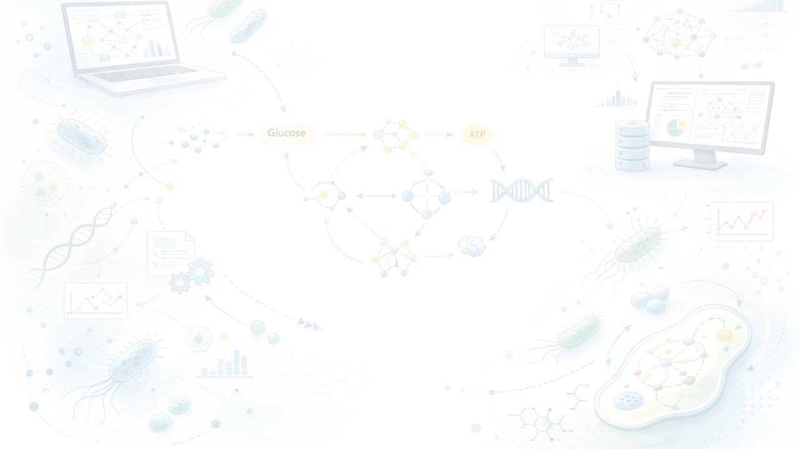

🔬 We study microbial interactions by infering traits from omics data and simulating microbiomes using metabolic models.
We are dedicated to understand what makes microbes to interact. Our research combines computational and ecological approaches to entangle microbial communities. We believe in open science, collaborative research, and training the next generation of scientists.
Based at Friedrich-Schiller University Jena in Germany and Cluster of Excellence Balance of the Microverse, we work at the intersection of functional ecology, metabolic modeling, and microbial physiology.
Microbes have long evolutionary past that enables and limits their mode of actions. We ask what are the trade-offs and strategies they use to thrive? What is different in host-associated mirobiomes like C. elegans?
Metabolism is the main driver of microbial diversity. We explore metabolic networks and focus on redox processes. How do oxygen preference and fermentation affect interactions?
Microbes are never alone! We build metabolic and trait-based models to study community interactions and dynamics. Besides metabolism, we are also curious about the effects of microbial predation.
Genome Biology, 2021
(10.1186/s13059-021-02295-1)PLOS Computational Biology, 2017
(10.1371/journal.pcbi.1005544)ISME, 2020
(10.1038/s41396-019-0504-y)mBio, 2024
(10.1128/mbio.00012-24)ISME, 2025
(10.1093/ismejo/wraf168)ISME Communications, 2025 (accepted)
(10.1101/2025.02.19.638989)We're always looking for motivated students and researchers to join our team. We offer a collaborative environment, access to state-of-the-art resources, and opportunities to work on cutting-edge problems.
Open positions: Bachelor and Master's thesis students
Get in Touch